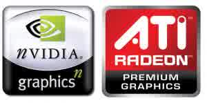

Perbedaan Grafis Nvidia dan Ati Radeon
 Anda masih bingung untuk memilih grafis mana antara Nvidia dengan ATI Radeon? Memang duo grafis ini yang merajai dalam dunia komputer saat ini, ke duanya bahkan saling bersaing dalam dunia pasaran. Bagi pecinta game memang ke dua grafis ini tidak di ragukan lagi dalam masalah gambar dan grafisnya. Bahkan ke dua grafis ini saling meng-update produk dan seri mereka untuk tetap bersaing dalam dunia pasaran. Nvidia dan ATI Radeon sendiri di gunakan untuk mendukung grafis eksternal pada laptop.
Tidak hanya menjadi pendukung eksternal pada laptop, tetapi ke ke dua grafis ini juga menjadi pendukung PC (personal computer. Dengan melihat slot VGA yang ada anda harus pandai memilih AGP atau Slot PCI-Express. Dengan tambahan VGA nvidia atau VGA ati radeon membuat tampilan komputer atau laptop anda menjadi tajam dan berbeda dalam tampilan. Anda bisa membandingkan tampilan komputer saat belum ada tambahan Grafis eksternal dan sesudah adanya grafis eksternal ini. Atau lebih mudahnya saat menggunakan internal grafis dan setelah terpasang eksternal grafis.
Untuk kode sendiri ke duanya sama-sama memiliki kode yakni jika Nvidia dengan kode Geforce dan Untuk AMD ati dengan kode Radeon. Ketika di hubungkan dengan dunia otomotif maka Nvidia sendiri sebagai Yamaha dan Ati Radeon sebagai Honda. Mereka dalam arti ke dua grafis eksternal ini sudah mengeluarkan harga mulai dari ratusan ribu bahkan sampai jutaan ataupun puluhan juta. Dengan melihat perbedaan yang ada maka anda bisa memilih antara VGA nvidia geforce atau VGA ati radeon. Hal ini menjadi pilihan anda yang menginginkan kecepatan lebih dalam aplikasi grafik dan 3D.
Perbedaan Nvidia dan Ati Radeon
Dalam segi performa ke duanya mempunyai kekurangan dan kelebihan yang cukup banyak dan tidak cukup untuk di jelaskan semua. Berikut beberapa perbedaan yang mendasar antara lain. Jika anda suka dengan software pemutar musik maka AMD Radeon lebih baik, hal ini di karenakan banyaknya pendukung extensi video daripada Nvidia Geforce dan Radeon juga memiliki fitur UVD yang tidak ada pada Nvidia Geforce.
Nvidia mempunya fitur physx yang berfungsi agar tampilan pada game yang anda mainkan terlihat lebih jernih dan jelas. Hal ini di karenakan saat proses mengolah data game di pindahkan ke GPU physx dan hanya bekerja pada grafik Geforce High End, dan jika AMD memiliki fitur seperti ini tetapi pengolahannya di bebankan pada CPU.
VGA Nvidia hebat dalam memainkan game dirext 11 namun kurang saat memainkan game berbasis dirext 9 dan 10 daripada AMD Radeon.
Ke dua grafik tersebut masing-masing mempunyai arsitektur yang berbeda, sehingga mempunyai kelebihan dan kekurangan yang berbeda pula.
Dalam kebutuhan edit video VGA Nvidia Geforce lebih handal daripada AMD Radeon.
Itulah beberapa perbandingan antara VGA Nvidia Geforce dan VGA ATI Radeon. Jika anda ingin membeli dan masih bingung ingin memilih mana, sesuaikan dengan badget yang anda miliki. Dan beberapa tips jika ingin membeli VGA eksternal ini jangan lupa untuk mengecek terlebih dahulu slot yang ada pada motherboard anda. Sekarang ini ada dua jenis slot yakni AGP dan slot PCI-Express, jika anda ingin membeli tanyakan terlebih dahulu pada penjual toko apakah itu AGP atau PCI-Express. Karena jika keliru maka tidak bisa di pasang, jadi anda harus memperhatikan hal ini.